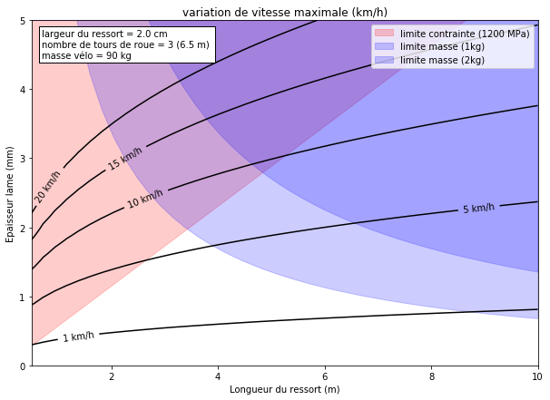

Regenerative braking system for bicycle
Ceux qui font du vélo en ville savent que démarer et accélerer est ce qui demande le plus d'effort. Un cycliste évite donc le plus possible de devoir s'arreter (parfois en désaccord avec le code de la route).
Hors l'énergie que nous coûte le démarrage correspond à l'énergie dissiper par les freins lors de l'arret.
Comment procurer une aide au démarrage en vélo en utilisant l'énergie à priori perdu lors du freinage ?
Pour qu'un tel système soit intéressant, j'image quelques conditions:
- Low tech (c.a.d. principalement non électrique).
- Il doit être adaptable sur un vélo existant (c.a.d. dans le moyeu ou attachable sur le cadre).
- Le système doit être raisonablement simple (pas pneumatique ou hydrolique).
Il existe plusieurs brevets et projets s'attaquant à cette question.
On peut noter cette vidéo de P. Cortona qui semble presenter un prototype fonctionnel et raisonable. Malheureusement, on ne trouve pas plus d'information. Le projet Quirky.com cité n'existe plus.
Et avec un projet, universitaire, avec un volant d'inertie: KERS bicycle technology university project at AIT.
Le brevet de Mark R. Brent et Jim M. Papadopoulos (1986) semble correspondre à mes conditions (système dans le moyeu). J'ai donc commencé par analyser ce brevet pour en comprendre le fonctionnement de ce mécanisme.
Analyse du brevet de Mark R. Brent et Jim M. Papadopoulos (1986)
Prior art
-
Le ratio energie stocker par rapport au poids est supérieure pour les volant d'inertie (Flywheels)... mais ces systèmes sont lourds et complexe (paliers, transmission variable)
-
Deux brevets cités: Pepper et Cauchon.
- Ressort métallique non utilisable parce que trop lourds pour stocker l'énergie necessaire.
Figures annotées


Voir la légende ici.
Schéma cinématique
Pour mieux comprendre le fonctionement du mécanisme un schéma aide.

Il y a deux commandes qui bloque ou libère chacune un embrayage (ou mécanisme de bloquage). Le système à donc théoriquement 4 états possibles.
- frein bloqué seul: la couronne est entrainée par la roue. L'engrennage soleil tourne alors dans le sens inverse. Ceci emagasine de l'énergie dans le ressort.
-
'Release' bloqué seul: Alors le ressort est en prise direct avec la roue. L'énergie du ressort est transmise à la roue qui tourne vers l'avant. à noter qu'il n'y a pas de réduction de vitesse de rotation possible ici.
-
tout libre: La roue n'entraine aucune engrenage... rien ne se passe.
- tout bloqué: Le mécanisme est bloqué... problème.
Rq: un cliquet est utilisé dans le brevet.
Ce qui est bien:
- Actionné par le frein (friction)... mais est-ce réelement bien ?
- Planet Gear: le mécanisme permet l'inversion du sens de rotation entre la charge et la décharge relativement simplement.
- Quand l'engrenage Sun est bloqué (c.a.d. ressort au max) alors l'engrenage Ring est aussibloqué: le comportement est alors celui d'un vrai frein.
Ce qui n'est pas super:
- L'Elastic material est en dehors du Hub! (voir Fig. 1)
- Le système de frein est questionable: système de levier non décrit et appuis en un point unique sur le brake pad...
-
L'important mécanisme d'engagement Clutch 220 est non décrit.
-
Pas de freinage d'urgence. Il faut toujours charger le ressort à fond avant de pouvoir bloquer la roue. Cece limite l'avantage d'un système actionné par le frein.
-
Pas de vrai dosage du frein... l'énergie est perdu en friction quand on ne freine pas au maximum... (Mais est-ce que c'est possible de faire autrement sans variateur continu ?)
Bugs dans le brevet:
- Le Lever 219 est dessiné avec une mauvaise orientation sur Fig. 3 par rapport à la Fig. 2
- Qu'elle est l'utilité du Planet alignement disc 216 ? Les axes des planétaires sont fixés au Reaction arm 211. Le Planet alignement disc 216 rend donc solidaire les Planet Gears avec le Sun Gear ce qui n'a pas de sens...
- Le dessin du Ratchets 24 est plein. On devrait voir le passage de l'axe...
Brevets citant
to do
Comment serait le système idéal?
Le système idéal devrait être transparent dans son utilisation, c.a.d:
- Release Command automatique si le pédalier tourne ?
- freinage d'urgence si frein au max...
Il peut être plus simple/avantageux que le système soit bien distinct des freins. Il faut le voir alors plus comme un moyen de ralentissement que comme un système d'arrêt. On l'actionne dans l'anticipation de l'arrêt, puis on freine pour poser le pied à terre.
Energie stockée dans un ressort
Le premier inconvénient de la solution proposée dans le brevet est que le matériaux élastique est placé sur le cadre, en dehors du système mécanique. On peut se demander si un ressort spiral métallique ne pourrait pas convenir, malgré le problème du poids indiqué dans le brevet.
La première question à répondre est le dimensionnement du ressort.

Effectivement la masse est un facteur fortement limitant.
- autre type de ressort ( gaz mais linéaire )
- matériau du futur
- alpha_max ?